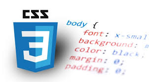
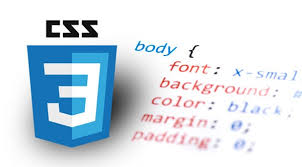

si deseas saber mas de html escribenos
si deseas saber mas de html escribenos
¿Qué es HTML?
Definiéndolo de forma sencilla, "HTML es el lenguaje que se utiliza para crear las páginas web a las que se accede mediante internet". Más concretamente, HTML es el lenguaje con el que se "escriben" la mayoría de páginas web.Los diseñadores utilizan el lenguaje HTML para crear páginas web, los programas que se emplean generan páginas escritas en HTML y los navegadores que utilizamos (por ejemplo Google Chrome, Opera o Mozilla Firefox) muestran las páginas web después de leer e interpretar su contenido HTML.Aunque HTML es un lenguaje que utilizan los ordenadores y los programas de diseño de páginas web, es muy fácil de entender y escribir por parte de las personas. En realidad, HTML son las siglas de HyperText Markup Language y más adelante se verá el significado de cada una de estas palabras. El lenguaje HTML es un estándar reconocido en todo el mundo y cuyas normas define un organismo sin ánimo de lucro llamado World Wide Web Consortium, más conocido como W3C. Como se trata de un estándar reconocido por todas las empresas relacionadas con el mundo de internet, una misma página escrita en HTML se visualizará de forma muy similar en cualquier navegador bajo distintos sistemas operativos.El propio W3C define el lenguaje HTML como "un lenguaje reconocido universalmente y que permite publicar información de forma global". Desde su creación, el lenguaje HTML ha pasado de ser un lenguaje utilizado exclusivamente para crear documentos electrónicos a emplearse en diversas aplicaciones electrónicas especializadas como buscadores, tiendas "en línea" y banca electrónica.
 
